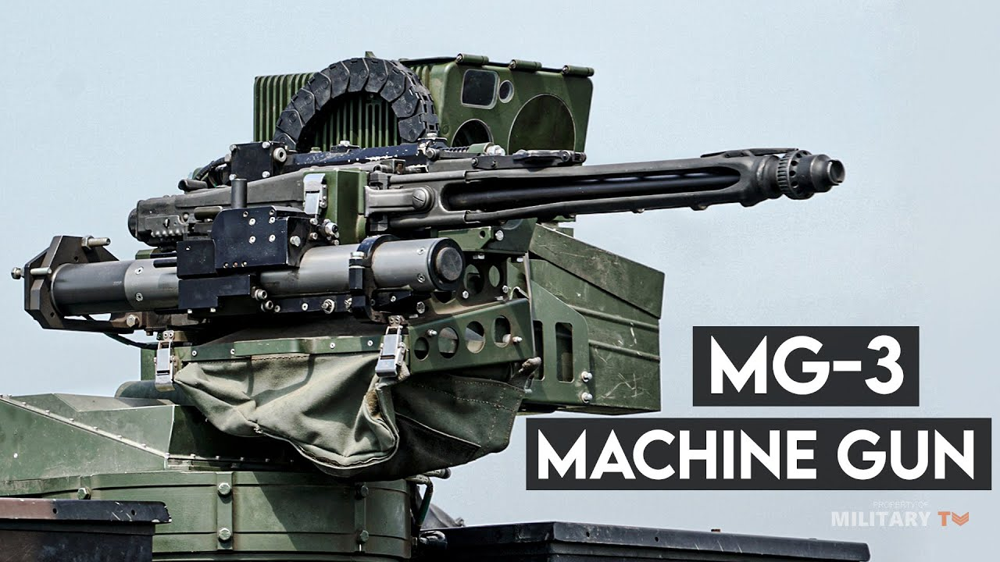

Heavy RCWS یو دروند او قوي سیستم دی چې د لویو نظامي وسایطو لپاره ډیزاین شوی. دا د جګړې په اصلي ساحو کې کارول کېږي. توانایي: لوړ ځواک، اوږد واټن، او قوي هدف ویشتلو وړتیا لري. ځانګړنې: قوي جوړښت او لوړ مقاومت د سختو شرایطو لپاره مناسب اوږد عملیاتي واټن لوړ دقت